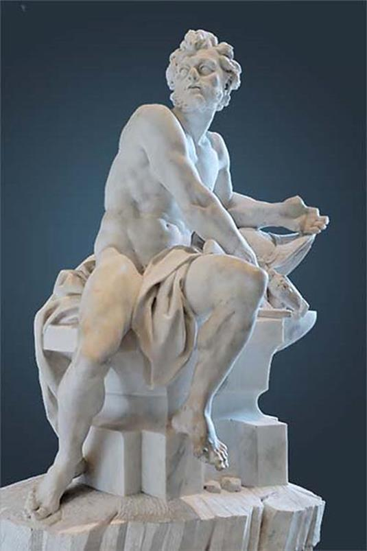

Trong các vị thần tối cao của đỉnh Olympe, thần Thợ rèn-Héphaïstos có một số phận khá hẩm hiu: thần dáng người không đẹp, khuôn mặt chẳng xinh, lại mang tật ở chân, đi cà nhót cà nhắc. Thế giới thần thánh và thế giới loài người thường gọi là vị thần Chân thọt. Nữ thần Héra thường gọi là “thằng con què của mẹ”.

Héphaïstos là con của Zeus và Héra. Nhưng có chuyện kể rằng, Héphaïstos chỉ là con của Héra thôi chứ không phải là con của Zeus. Vì sao lại có chuyện lạ đời như thế? Nguyên do là nữ thần Héra tức khí với chuyện thần Zeus không cần đàn bà mà vẫn sinh ra được con, sinh nữ thần Athéna từ trong đầu ra cho nên Héra phải “trổ tài” sinh Héphaïstos mà không cần đàn ông, không dính líu, đụng chạm gì đến thần Zeus. Xét kỹ chuyện này... có chỗ thần thoại quá! Bởi vì như ta đã biết, một người có công “đỡ” cho Athéna là Héphaïstos. Chính vị thần Thợ rèn Chân thọt này theo lệnh Zeus, giáng một nhát búa thật lực vào đầu Zeus khiến cho đầu Zeus nứt toác ra, nhờ đó nữ thần Athéna mới có đường mà nhảy ra. Vậy thì nếu Héphaïstos sinh sau Athéna do cái sự tức khí của Héra thì ai là người “đỡ” cho Athéna? Chúng ta ghi nhận một sự “khảo dị” như thế để đi đến kết luận rằng vấn đề trật tự thời gian trong thần thoại không hề đặt ra đối với trí tưởng tưởng nghệ thuật-không tự giác của nhân dân thời cổ. Chúng ta sẽ mất công vô ích nếu chúng ta đi tìm xem Dionysos sinh trước hay sau Héraclès. Néoptolème con của Achille sinh vào lúc nào mà đi tham gia cuộc Chiến tranh Troie một cách “bằng vai phải lứa” với các vị tướng thuộc thế hệ Achille. Vì lẽ đó trong khoa folklore học có khái niệm “thời gian thần thoại” để phân biệt đối lập lại với khái niệm “thời gian lịch sử”. Chúng ta có thể ghi nhận thêm một môtíp của truyện cổ: sự sinh nở thần kỳ không cần bắt nguồn từ tác động của người đàn ông. Trong gia tài truyện cổ của thế giới Hy Lạp và Trung Cận Đông không thiếu gì những môtíp như thế. Chắc chắn rằng kỳ tích phép màu “sự thụ thai thanh khiết” (Conception immaculée) theo đó Đức mẹ Đồng trinh sinh ra Chúa Hài đồng trong thần thoại Thiên Chúa giáo có họ hàng gần xa gì đó với những chuyện tương tự như chuyện Zeus sinh ra Athéna, Héra sinh ra Héphaïstos trong mối quan hệ “đơn phương” như thế.
Chuyện Héphaïstos đích thực do ai đẻ đã lôi thôi như vậy. Đến chuyện cái chân què của Héphaïstos cũng không kém phần rắc rối. Người xưa kể rằng, sau khi sinh nở xong, nữ thần Héra thấy đứa con mình hình thù xấu xí quá, lại thọt chân, bực mình cầm luôn thằng bé quẳng ngay xuống trần, Héphaïstos từ chín tầng mây rơi xuống... vương quốc của thần Poséidon. Các nữ thần Eurynomé và Thétis đón được đứa bé đưa về cung điện của vị thần già Okéanos tóc bạc. Họ đã chăm nom nuôi nấng, dậy dỗ chú bé thành người... đúng ra là thành thần. Tuy bẩm sinh xấu xí chân thọt nhưng được cái Héphaïstos lại sáng ý, khéo tay, học một biết mười, đặc biệt là khỏe mạnh cho nên đứa con què của Héra đã trở thành thợ rèn tài giỏi. Héphaïstos đã rèn nhiều đồ trang sức quý giá cho hai nữ thần nuôi nấng dậy dỗ mình. Chàng được hai nữ thần rất mến và cả thế giới Đại dương của vị thần già Okéanos đầu bạc trọng vọng. Tuy vậy trong lòng chàng vẫn không vui. Chàng nuôi dưỡng một mối thù ghét ấm ức với nữ thần Héra, người mẹ đã không thương yêu chàng mà lại hắt hủi chàng. Chàng nảy ra ý định trả thù mẹ. Héphaïstos bắt tay vào việc. Chàng rèn một chiếc ghế tựa bằng vàng tuyệt đẹp, chạm trổ tinh vi gửi lên thiên đình làm quà biếu mẹ. Nữ thần Héra nhận tặng phẩm trong lòng rất đỗi sung sướng, bởi vì ngoài thần Zeus ra thì không ai có được chiếc ghế quý giá và công phu đến thế. Vị nữ thần uy nghi và đường bệ, đấng mẫu hậu của cả thế giới thần thánh và loài người phải có cái ghế cho xứng hợp với danh giá chứ! Cho nó tôn thêm danh giá chứ! Héra tưởng tượng ra khi mình ngồi vào chiếc ghế tuyệt tác ấy, mọi vị thần sẽ thấy nàng oai nghiêm hơn biết chừng nào, đáng kính, đáng yêu hơn biết chừng nào! Nàng thích chiếc ghế đẹp đẽ ấy hơn cả mọi đồ trang sức cho nên nàng nhầm tưởng rằng chiếc ghế sẽ đem lại cho nàng nhiều giá trị hơn cái giá trị thực của nó là để ngồi. Than ôi! Nàng có ngờ đâu ngay cái giá trị để ngồi của nó cũng không có nữa. Héra vừa ngồi vào ghế thì bỗng đâu từ tay ghế, chân ghế chỗ dựa bung ra những sợi dây xích, dây xích cũng bằng vàng, quấn chặt trói chặt nàng vào ghế. Héra la hét ầm lên và giãy giụa trong chiếc ghế. Các nữ thần tùy tùng chạy xô đến gỡ cho nàng nhưng không sao gỡ được. Các nam thần thì thở dài, lắc đầu quầy quậy. Chẳng ai chặt được những sợi dây xích ấy cả, ngoài người làm ra nó, vị thần Thợ rèn Chân thọt Héphaïstos. Chỉ có cách duy nhất gỡ được đấng mẫu hậu ra là triệu Héphaïstos từ dưới cung điện của Okéanos lên.
Thần Hermès, người truyền lệnh không chậm trễ của thế giới Olympe, ngay tức khắc lên đường. Với đôi dép có cánh, thần bay vụt ra khỏi cung điện Olympe và đi, chạy nhanh hơn cả mây bay gió thổi trong bầu trời bao la. Thần đi xuống mặt đất rồi từ mặt đất phì nhiêu thần đi ra bờ biển. Và thần chạy nhanh trên mặt biển bao la, như muốn chạy thi với những con sóng tươi cười. Hermès chạy trên mặt biển rồi xuống tận dưới đáy sâu tìm vào chiếc hang nơi Héphaïstos ngày đêm cặm cụi làm việc với đôi bàn tay khéo léo, tinh xảo của mình. Hermès đến, trân trọng mời Héphaïstos lên thiên đình cởi bỏ xích xiềng cho Héra, mẹ chàng, vị nữ thần chúa tể của các thần và người trần thế. Hermès tha thiết, khẩn khoản, thuyết phục Héphaïstos nhưng chẳng thể nào lay chuyển được trái tim ương bướng của Héphaïstos vẫn nuôi giữ một mối oán hờn đối với người mẹ đã sinh ra mình. Thần Hermès bất lực đành phải nghĩ ra một kế mời vị thần Rượu nho-Dionysos tới. Dionysos vốn là vị thần tính khí vui vẻ, xởi lởi cho nên vừa tới cửa hang của Héphaïstos là đã cười nói bô bô:
- Chào ông anh khập khiễng của tôi! Ông anh ơi! Ông anh làm gì mà ngày đêm cặm cụi như thế. Nghỉ tay cái đã! Ta làm với nhau một chầu cho nó thấu hiểu cái sự đời.
Thế là Héphaïstos chạm cốc, mở đầu cho cuộc hội ngộ bằng vài tuần rượu nho. Chén chú chén anh, chuyện anh chuyện chú, thật thú vị. Dionysos khề khà vỗ vai Héphaïstos bảo:
- Tôi cứ nghĩ từ cái cục vàng, thỏi đồng chẳng khác chi cục đất, hòn đá vô tích sự, thế mà vào tay ông anh nó lại ra những cái khiên, cái mũ trụ, áo giáp hộ tâm, rồi cốc vại, bình đựng, tháp lớn, tháp nhỏ đẹp đẽ, tinh vi quả thật là tuyệt đỉnh của sự văn minh rồi! Ấy là ông anh còn thọt đấy! Chứ giá mà ông anh lại lành lặn cả như người ta thì chưa biết thế nào mà nói.
Héphaïstos cầm lấy bình rượu nho nâng lên rồi lại đặt xuống, gật gù, tiếp lời:
- Cảm ơn chú quá khen anh! Nhưng anh tưởng cứ như cái quả nho là cái quả nho trên cây, chín ăn chỉ ngọt thôi, thế mà chú mày làm thế nào nó thành một thứ nước uống vào vừa ngọt lại vừa tê tê, cay cay, chua chua, ngây ngất, choáng váng cả đầu óc, nóng bừng cả người lên thì... thì là một đại tuyệt đỉnh của văn minh nữa rồi. Cũng là quả nho mà ra cả, thế mà tiệc tùng, hội hè, vui buồn chẳng ai đem nho ra mà mời nhau thay cho cái thứ nước nho của chú mày cả. May mà chú mày chỉ làm có một thứ nước nho đặc biệt ấy. Chứ mà chú mày làm đủ các thứ nước từ các quả khác nữa thì khéo mà thần thánh và loài người chỉ uống với ngủ suốt ngày!
Đến đây thì mọi người hẳn đoán được kết quả của bữa rượu này là như thế nào. Héphaïstos líu cả lưỡi, không còn biết trời đất ở đâu nữa. Hermès và Dionysos vực chàng ta lên một con lừa và dẫn chàng về cung điện Olympe. Đi theo Héphaïstos và Dionysos là các nàng Ménades, các nàng Thyades tay cầm gậy thyrse vừa đi vừa nhảy múa, la hét cuồng loạn. Các thần Satyre thô lỗ cũng say mềm vừa đi vừa ề à ca hát, múa may quay cuồng, tay cầm đuốc tay gõ thanh la. Đám rước của bầu đoàn thê tử thần Dionysos với con lừa lẵng nhẵng chở trên lưng vị thần Héphaïstos say mềm cứ thế tiến vào cung điện Olympe. Đến đây thì Héphaïstos không thể nào từ chối việc phải làm được. Chàng ra tay, chỉ loáng một cái là nữ thần Héra thoát khỏi chiếc ghế xiềng xích. Nữ thần Héra từ đây không hắt hủi đứa con què nữa mà cho nó ở lại thế giới Olympe. Còn Héphaïstos cũng chẳng nuôi giữ mối oán hờn với người mẹ nữa.
Một chuyện khác kể rằng Héphaïstos chẳng hề bị Héra hắt hủi bao giờ. Chàng bẩm sinh ra là một vị thần đẹp đẽ. Chàng rất yêu mẹ và Héra cũng rất yêu con. Đối với những đứa con do mình đẻ ra, Héra chẳng khi nào hắt hủi. Nàng chỉ ghét cay ghét đắng những đứa con do thần Zeus lăng nhăng với người khác sinh ra. Như chúng ta đã biết, hai vợ chồng Zeus và Héra sống với nhau, tuy nói chung là tốt đẹp, song cũng hay xảy ra những phút bất hòa. Thần Zeus với thói quen của một vị thần... tối cao, trong những lúc ấy thường tỏ ra nóng nảy, không chịu thua kém vợ, hơn nữa lại có thói xấu nạt nộ và dùng vũ lực để trấn áp sự rỉa rói của Héra. Vào những lúc ấy, Héphaïstos rất khó chịu, rất bực với bố. Có một lần Héphaïstos không thể nín nhịn được, đã đứng về phía mẹ, bênh vực mẹ và chê trách bố. Thần Zeus đang cơn bực lại càng bực thêm liền sấn đến, túm lấy cổ Héphaïstos dần xuống rồi cầm hai chân xách ngược lên, quẳng đánh vèo một cái từ cung điện Olympe xuống trần, Héphaïstos rơi từ thế giới Olympe cao xa vời vợi xuống trần, nhưng không phải xuống biển khơi hay đất bằng mà rơi xuống một hòn đảo, người thì bảo rơi vào tận trong lòng núi Etna125, người thì bảo rơi xuống đảo Lemnos. Vì là một vị thần bất tử, được nuôi dưỡng bằng các thức ăn thần và rượu thánh nên Héphaïstos không thể chết được, chàng chỉ bị què. Nguồn gốc của cái tật chân thọt ở chuyện bị Zeus quẳng xuống trần chứ không phải bẩm sinh đã thế. Bị rơi tụt hẳn vào trong lòng đất, Héphaïstos với tài năng của mình đã sáng chế ra một cái lò rèn khổng lồ và đêm, ngày thì thụt thổi lửa rèn các vũ khí, dụng cụ tinh xảo, đẹp đẽ. Cùng giúp việc rèn với Héphaïstos có các người khổng lồ Cyclopes. Những Cyclopes này, theo người xưa kể, chính là ba Cyclopes đã từng bị Cronos giam xuống âm ty, địa ngục, Zeus đã giải phóng chúng để có lực lượng chống lại Cronos và cử chúng đến giúp đỡ, phụ rèn cho Héphaïstos. Nhưng có chuyện lại kể những Cyclopes này là do Héphaïstos “tuyển mộ” được ở trong lòng các núi lửa. Chúng vốn là thợ rèn nhưng tay nghề không thạo không giỏi bằng Héphaïstos. Dưới sự điều khiển của vị thần Thợ rèn Chân thọt, các Cyclopes rèn vũ khí cho các vị thần và các dũng sĩ, anh hùng. Trong số các phụ rèn này có Pyracmon126 và Acamas127 nổi tiếng hơn cả. Vì lẽ đó cho nên ngày nay, Cyclopes chuyển nghĩa, ngoài nội dung “người khổng lồ” còn có nghĩa “thợ rèn” (không phổ biến lắm). Do những chiến công vĩ đại ấy thần Zeus lại phục hồi cho Héphaïstos trở về thế giới Olympe và được liệt vào hàng ngũ mười hai vị thần tối cao.
Héphaïstos là vị thần hữu ích nhất cho thế giới Olympe. Đây cũng là người thợ rèn duy nhất lo việc xây dựng, kiến thiết, trang trí cho đời sống các vị thần được thêm phần văn minh và đẹp đẽ. Héphaïstos cho làm một cái lò rèn khổng lồ với bao điều kỳ diệu ở ngay trên thiên đình. Với chiếc bễ thần thánh, vị Thợ rèn Chân thọt này chẳng phải dùng đôi tay nhọc nhằn thổi hơi cho nó. Chàng chỉ đến bên chiếc bễ ra lệnh và thổi nhẹ một cái. Thế là chiếc bễ chẳng cần người điều khiển cứ lên lên, xuống xuống, thì thụt thổi hơi làm cho lò rèn của chàng lúc nào cũng cháy đỏ, Héphaïstos với chiếc búa, chiếc kìm suốt ngày cặm cụi đập đập, gõ gõ trên chiếc đe khổng lồ. Chàng rèn và xây dựng cho các vị thần Olympe một cung điện bằng vàng, xây cho mình một cung điện bằng vàng, bằng bạc và bằng đồng. Người xưa kể chàng lấy một nữ thần Duyên sắc-Charites làm vợ tên là Aglaé, nhưng, như trên chúng ta được biết, chính nữ thần Aphrodite mới là vợ của chàng. Chàng đã khổ sở biết bao vì người vợ quá đẹp này. Cô ta chẳng chung thủy với chàng, và chàng cứ tự giày vò mình bằng những ý nghĩ tự ti, thất vọng vì nỗi mình, số phận dành cho một khuôn mặt chẳng xinh đẹp lại còn mang thêm cái tật thọt chân. Sự ghen tuông đã thổi lửa vào trái tim chàng. Chàng rắp tâm bắt quả tang đôi gian phu dâm phụ để kiện với các vị thần. Chàng, bằng đôi tay khéo léo của mình, rèn một tấm dưới sắt tinh vi giăng trên mái nhà. Thần Chiến tranh-Arès quen thói trăng hoa lần mò đến tư thông với Aphrodite thì, ụp một cái! Tấm lưới sắt được giấu kín từ trên mái nhà chụp xuống. Héphaïstos kêu gào các vị thần đến chứng kiến cảnh xấu xa, ô nhục này và phân xử cho mình. Arès sẽ phải nộp tiền chuộc tội, thần Poséidon phải đứng ra bảo lãnh, nếu Arès không nộp phạt thì mình sẽ nộp thay. Chỉ đến khi ấy Héphaïstos mới chịu kéo lưới lên, tha cho anh và ả.
Tuy thân hình xấu xí nhưng Héphaïstos được các vị thần hết sức mến yêu và quý trọng, vì chàng đã làm ra biết bao đồ trang sức quý giá, bao dụng cụ cần thiết cho đời sống các thần, vì chàng rất tận tâm phục vụ các thần. Thường sau khi làm việc xong, tắm rửa rạch sẽ, Héphaïstos với đôi chân khập khểnh bước vào dự tiệc với các đấng thần linh. Chân đã thọt nhưng chàng lại chẳng chịu ngồi yên một chỗ. Chàng cứ lăng xăng chạy đi chạy lại hết chỗ này đến chỗ khác và cùng với Hébé và Ganymède rót rượu và dâng thức ăn cho các vị thần. Những lúc ấy, các vị thần rượu say ngà ngà, nhìn chàng cả nhót cà nhắc, đi đi lại lại thì phá lên cười. Chẳng ai nhịn được cười kể cả thần Zeus. Các vị thần đều cười sảng khoái, hể hả và cười mãi, cười vang cho đến tận chiều khi tiệc tan, cạn chuyện mới thôi. Anh hùng ca của Homère đã miêu tả cảnh tượng vui vầy, hể hả, thoải mái của các vị thần khi thấy Héphaïstos chạy lăng xăng hết bàn tiệc này đến bàn tiệc khác. Vì thế có điển tích Tiếng cười kiểu Homère (Le rire homérique) để chỉ một tiếng cười không sao nhịn được, sảng khoái, hả hê, cười phá lên, ầm vang lôi cuốn. Từ đó định ngữ “Homérique” (kiểu Homère) chuyển nghĩa chỉ sự phong phú. Những bữa tiệc Homérique chỉ những bữa tiệc linh đình, thịnh soạn.
Héphaïstos là vị thần lửa, nhưng lửa ở trong lòng đất. Với trí tưởng tượng thần thoại, người xưa đã giải thích hiện tượng lửa ở trong lòng đất phụt lên không phải là những ngọn núi lửa như ngày nay chúng ta hiểu biết và giải thích bằng những lý lẽ này khác. Đấy là những lò rèn của thần Thợ rèn-Héphaïstos đó. Từ thần lửa ở dưới đất đến thần Thợ rèn là một sự suy luận gần nhất, một mối liên hệ tất yếu trực tiếp nhất dường như không thể nào tránh được. Lửa ở dưới đất, Núi lửa ⇔ Lò rèn, Thần lửa ở dưới đất ⇔ Thần Thợ rèn, đó là cái tư duy logic của tưởng tượng thần thoại. Nhưng còn cái chân thọt của thần Thợ rèn? Cũng hơi lạ vì sao một vị thần có tài năng như thế mà người xưa lại bắt phải chịu một thân hình xấu xí? Điều này gắn với sự phân công lao động trong công xã. Thường thì những người có sức khỏe mới đảm đang được công việc cày bừa trồng trọt nặng nhọc. Còn những người tàn tật, sức khỏe kém thì làm lao động thủ công, thứ lao động cần đến sự khéo léo, tinh tế nhiều hơn là cần đến sức lực. Héphaïstos chính là vị thần của nghề thủ công trong công xã thị tộc. Và không rõ đây có phải là một sự suy diễn quá mức không. Trong ánh lửa bập bùng, lung linh chờn vờn của những đống lửa của cái lò rèn, những người cổ xưa đã tưởng tượng ra như vị thần lửa của họ với bước chân cà nhót, cà nhắc đang đến với họ, đang đem ngọn lửa của nghề thủ công rọi sáng vào cuộc đời tăm tối của họ. Đây không phải là ngọn lửa phá hoại gây ra những tai họa trong đời sống. Cũng không phải ngọn lửa mà Prométhée đã đoạt được của Zeus đem xuống cho loài người - ngọn lửa như nguồn năng lượng đầu tiên mà loài người phát hiện được, sử dụng được, là nguồn gốc của văn hóa, văn minh, kỹ thuật. Đấy là ngọn lửa của nghề thủ công, ngọn lửa của công nghiệp luyện kim và công nghiệp cơ khí của xã hội công xã thị tộc. Chính vì lẽ đó mà Héphaïstos tuy thân hình xấu xí nhưng lại là một vị phúc thần của nhân dân Hy Lạp. Người xưa thể hiện tượng Héphaïstos như một ông già đầu đội mũ hình tháp, râu ria bờm xờm, thân hình to khỏe, dáng thô, tay cầm búa hoặc cầm kìm. Héphaïstos đã sáng tạo ra nhiều thứ, trong đó có tác phẩm kỳ công nhất, tuyệt diệu nhất là cái khiên của Achille. Chàng cũng đã từng đem ngọn lửa của mình giúp Achille chiến thắng thần Sông-Scamandre trong cuộc Chiến tranh Troie.
[125] Etna là tên một ngọn núi lửa ở đông bắc đảo Sicile, nước Ý.
[126] Tiếng Hy Lạp pyracmon: cái đe.
[127] Tiếng Hy Lạp acamas: không biết mệt.